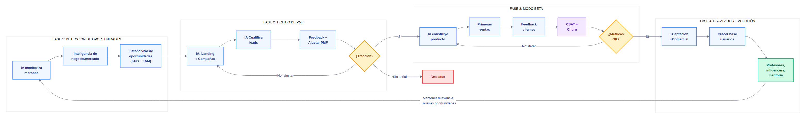

El mercado cambia en semanas. La tecnología permite iterar en días. La organización actúa en trimestres. El modelo actual — planificar, construir, vender — asume que sabemos lo que el mercado quiere antes de preguntarle. Los errores se detectan tarde, cuando la inversión ya está hecha. No actuar es quedarse progresivamente más atrás.
Invertir el orden. Que el mercado dicte qué construir. Un modelo de 4 fases con bucles de iteración internos.

IA monitoriza en continuo 6 fuentes: empleo, competidores, demanda corporativa, empleabilidad, tendencias e inteligencia de no-compra (entrevista automática a leads no convertidos). Las señales se agrupan en clusters de skills, se comparan contra el portfolio actual y generan un informe semanal de recomendaciones con TAM: crear, complementar o reestructurar formaciones.
IA construye landings en horas. Agentes de IA gestionan campañas. IA cualifica leads por voz y chat. Bucle: landing → cualificación → feedback → ajustar mensaje/precio → repetir. Sin tracción → descartar. Coste: días.
IA construye v1 funcional en días. Primeros clientes reales. Comercial recibe leads cualificados. Bucle: construir → feedback → medir CSAT y Churn → iterar. Solo se escala cuando las métricas lo justifican.
Escalar captación y comercial sobre evidencia. Con tracción: incorporar profesores, influencers y mentoría premium. Vuelve a Fase 1 para mantener relevancia del producto y detectar nuevas oportunidades.
| Área | Cambio clave |
|---|---|
| Producto | De roadmap cerrado a listado vivo de oportunidades con KPIs y TAM. Solo se construye lo que supera el testeo de PMF |
| Marketing | De comunicar lo que existe a generar la evidencia que decide qué se construye: campañas y landings gestionadas por IA |
| Comercial | De calificar desde cero a recibir leads cualificados por IA desde Fase 3, con perfil y propensión de compra evaluados |
| Académico | De construir sin saber si funcionará a aportar valor premium sobre productos con tracción validada en Modo Beta |
«Escalamos inversión humana y de captación solo cuando tenemos evidencia de PMF y métricas de CSAT/Churn aceptables. Primero IA, después humanos premium, y solo cuando el mercado lo valida.»